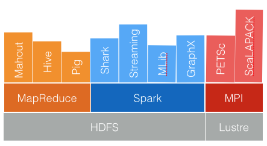
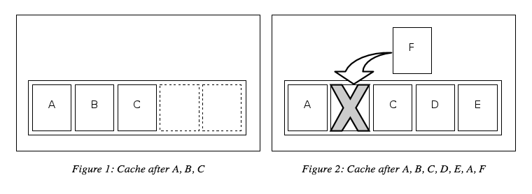

Google Trends
- What problem/solution motivated this trend?
Performance
How can we improve distributed processing?

Spark & Alternatives (Part I)
Details explained in:
Spark & Alternatives (Part II)

- Spark is a highly flexible process.
Least Recently Used (LRU) Algorithm

Spark Motivation
- Lazy Computation: optimizes the job before executing (re-order joins, ect.).
- In-memory intermediate data caching: LRU.
- Efficient pipelining: efficiently avoids hitting the HDD.
- *RDD: collection of data items split into partitions and stored in memory on worker nodes on the clusters
- Spark is an entirely in-memory technology.
- Spark always performs 10x-100x faster than Hadoop.
- Spark introduces completely new approach for data processing on the market.
Example Code
import json
infile = sc.textFile("s3n://2016-04-07.CU.lecture/test.data")
json_data = data.map(lambda x: json.loads(x))
parsed_text = json_data.flatMap(lambda x: x['body'].lower().split())
counts = parsed_text.map(lambda x: (x,1)).reduceByKey(lambda x,y: x+y)
sorted_counts = counts.sortByKey(ascending=False)
Wordcount in Mapreduce

Pulling in data, we see that each transformation creates a new RDD.
Additional functionality in Spark
 In general, Spark is faster than MapReduce because of:
In general, Spark is faster than MapReduce because of:
- Faster task startup time.
- Faster shuffles.
- Faster workflows.
- Caching.